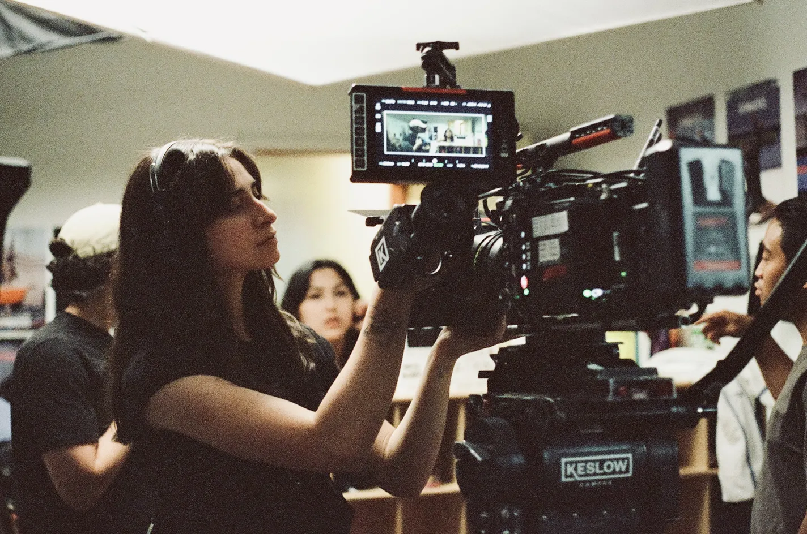
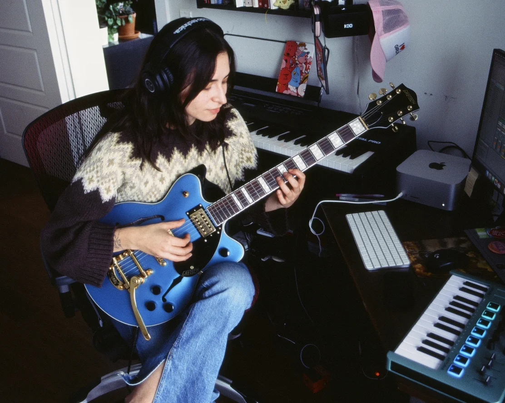
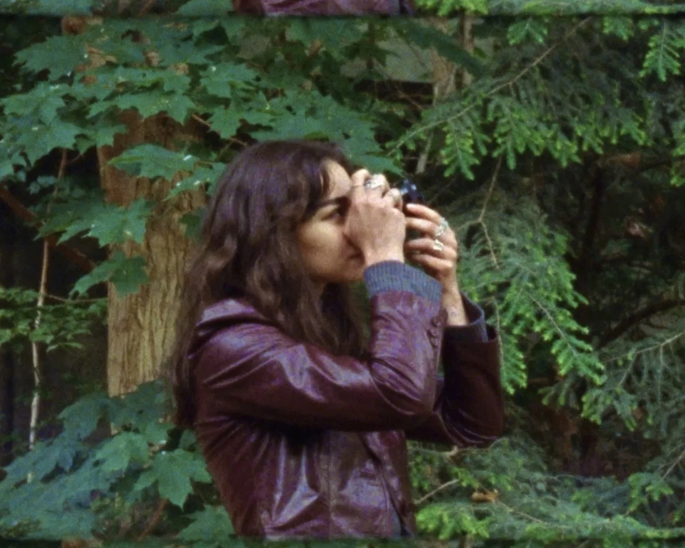

About me
Sofia Abud is a Mexican cinematographer and photographer based in Toronto.
Her work explores the human experience, often focusing on themes of identity, belonging, heritage, and memory. She draws inspiration from everyday moments that shape how we see ourselves and the world around us.
Sofia enjoys collaborating with other artists to bring meaningful stories to life, adapting her visual and stylistic approach to suit each project.
She also composes immersive soundscapes and music for film, exploring the relationship between image and sound to create layered, transformative experiences.
Lets connect!